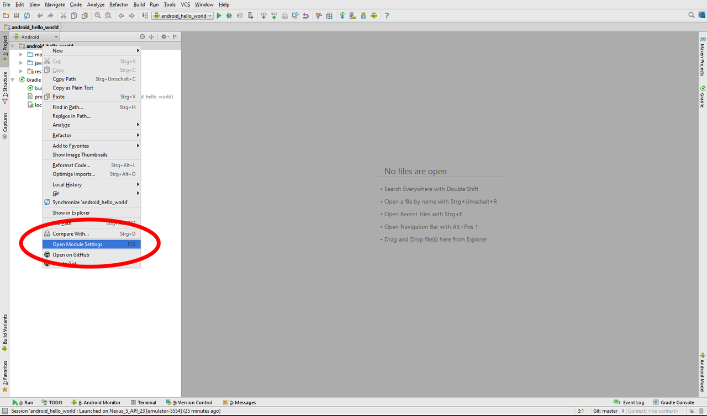
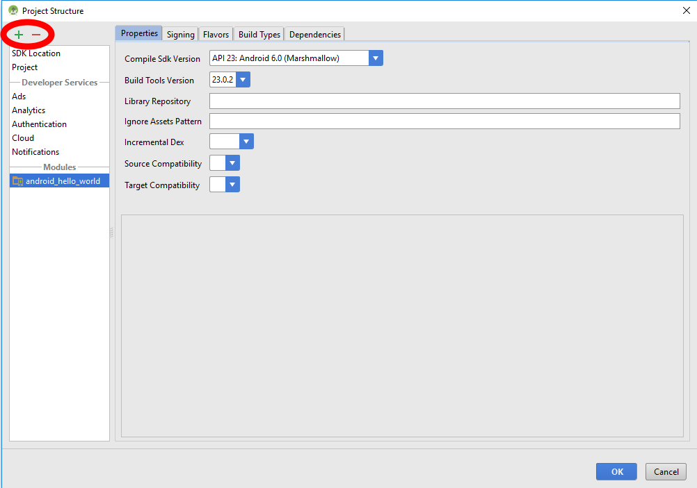
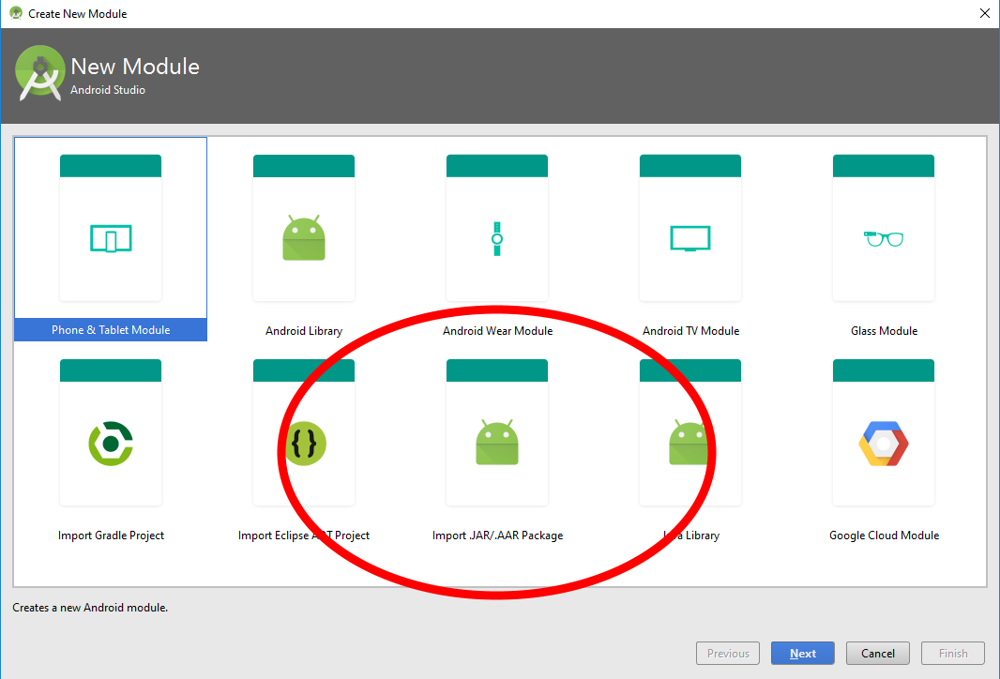
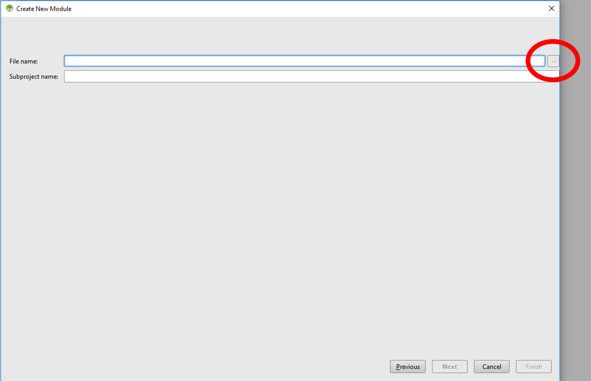
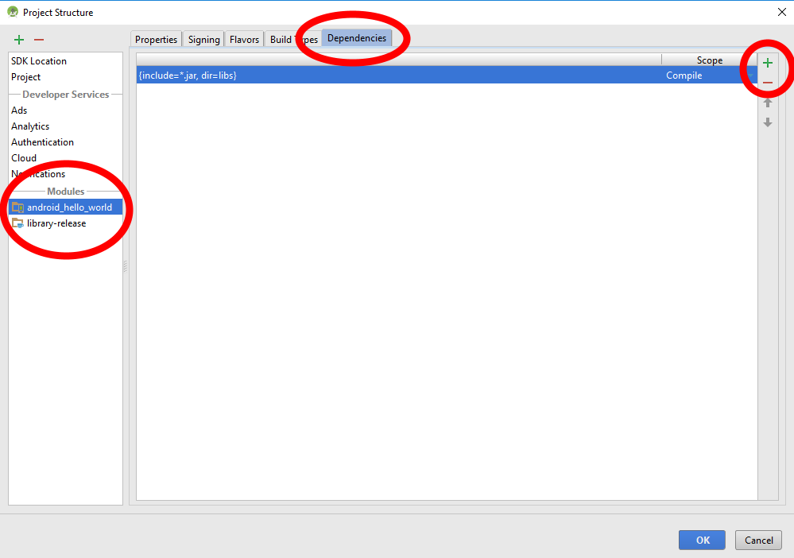
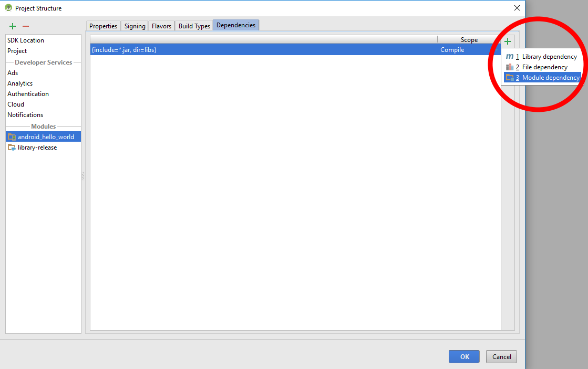
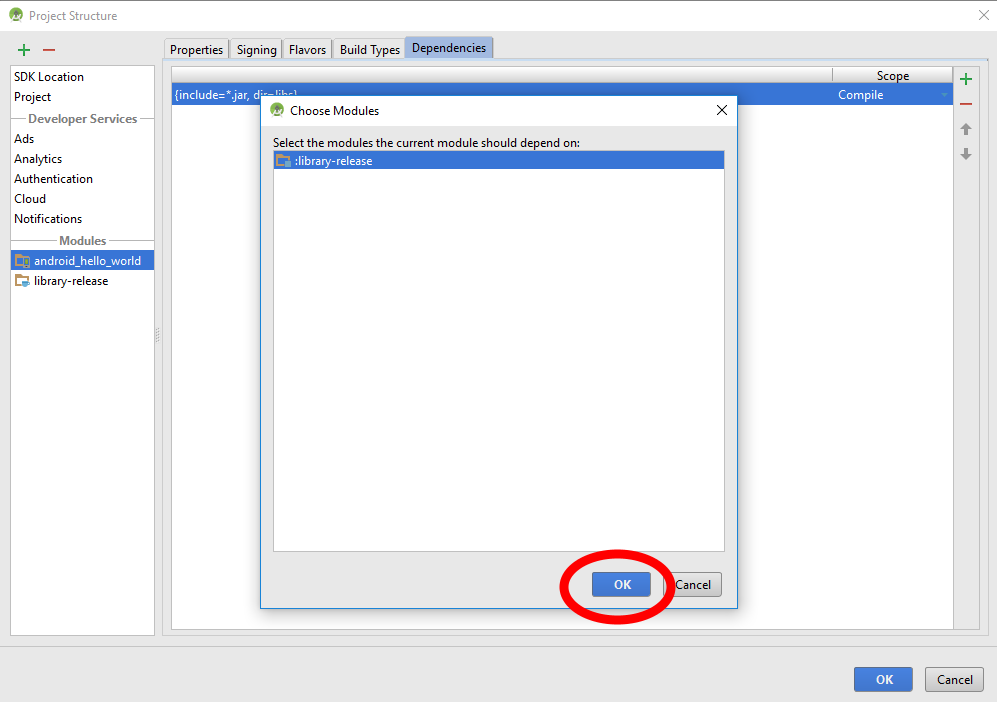

How to manually include external aar package using Gradle for Android
I've been experimenting with the new android build system and I've run into a small issue. I've compiled my own aar package of ActionBarSherlock which I've called 'actionbarsherlock.aar'. What I'm trying to do is actually use this aar to build my final APK. If I include the whole ActionBarSherlock library as an android-library module to my main project using compile project (':actionbarsherlock') I'm able to build successfully without any problems.
But my problem is that I want to provide that dependency as a aar file package MANUALLY just if I would a JAR then I can't seem to figure out how to properly include it into my project. I've attempted to use the compile configuration but this doesn't seem to work. I keep on getting cannot find symbol during compile which tells me that the classes.jar from aar package isn't getting included in the classpath.
Does anyone know of the syntax to manually include an aar package as a file?
build.gradle
buildscript { repositories { mavenCentral() } dependencies { classpath 'com.android.tools.build:gradle:0.4' } } apply plugin: 'android' repositories { mavenCentral() } dependencies { compile files('libs/actionbarsherlock.aar') } android { compileSdkVersion 15 buildToolsVersion "17.0" }
EDIT: So the answer is that it's not currently supported, here's the issue if you want to track it.
EDIT: Currently as this is still not supported directly the best alternative seems to be the proposed solution from @RanWakshlak
EDIT: Also simpler by using the syntax proposed by @VipulShah
Answer
Please follow the steps below to get it working (I tested it up to Android Studio 2.2).
Let's say you have an .aar file in libs folder (e.g. cards.aar).
Then in app build.gradle specify following and click Sync Project with
Gradle files.
Open Project level build.gradle and add flatDir {dirs("libs")} like below:
allprojects {
repositories {
jcenter()
flatDir {
dirs("libs")
}
}
}
Open app level build.gradle file and add .aar file:
dependencies {
implementation(name:'cards', ext:'aar')
}
If you are using Kotlin and have a build.gradle.kts file:
dependencies {
implementation(name = "cards", ext = "aar")
}
If everything goes well, you will see library entry is made in build ->
exploded-aar.
Also note that if you are importing a .aar file from another project that
has dependencies you'll need to include these in your build.gradle, too.
Suggest
- Right click on your project and select "Open Module Settings".

- Click the "+" button in the top left corner of window to add a new module.

- Select "Import .JAR or .AAR Package" and click the "Next" button.

- Find the AAR file using the ellipsis button "..." beside the "File name" field.

- Keep the app's module selected and click on the Dependencies pane to add the new module as a dependency.

- Use the "+" button of the dependencies screen and select "Module dependency".

- Select the module and click "OK".

EDIT: Module dependency in screenshot 6 has been removed in Android Studio 4.1. As an alternative add the module dependency to the build.gradle.
dependencies {
implementation project(':your_module')
}
EDIT: The user interface and the work flow have been changed a lot in Android Studio 4.2. The process to add a dependency is very well explained in an official documentation now: Adding dependencies with the Project Structure Dialog